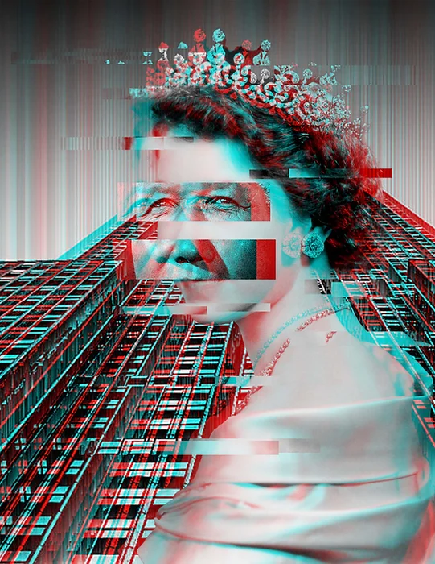
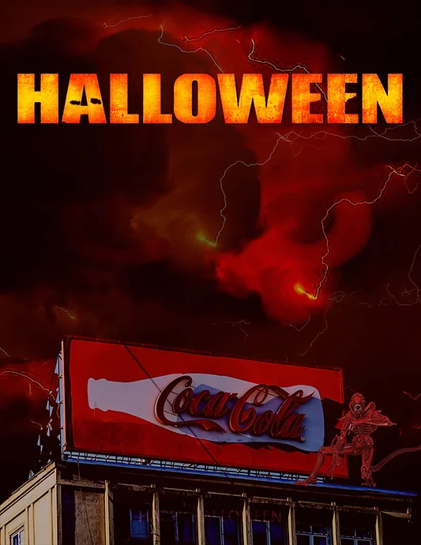

<!DOCTYPE html>
<html lang="en">
<meta charset="UTF-8">
<title>My Website</title>
<meta name="viewport" content="width=device-width,initial-scale=1">
<link rel="stylesheet" href="style2.css">
<style>
body {
  background-color:#808080;
}
</style>

</html>

<html>
<head>
	<title>My Personal Website</title>
</head>
<body>
	<header>
		<h1>My Artworks</h1>
		<nav>
			<ul>
				<li><a href="index.html">Home</a></li>
				<li><a href="aboutme.html">About Me</a></li>
				<li><a href="artwork.html">Artworks</a></li>
				<li><a href="pet.html">Pet</a></li>
			</ul>
		</nav>
	</header>
	
	<main>
		<h2>Description:</h2>
		<div class="image-container">
		<div class="image">
		
		</div>
		<p>My Art 107 project was a poster inspired by the unstable and ever-changing nature of TV screens in the digital media era. Using graphic design and photography, I aimed to capture the chaos and instability of modern media with overlapping shapes and colors. The bold typeface draws attention to the message, while the black and white photography adds depth and texture. Through this poster, I wanted to explore how digital media affects our sense of reality and encourage viewers to embrace the ever-changing world around us. Thank you for taking the time to view my project.</p>
		</div>
		<div class="image">
        
		<p>A horror-themed poster was created for Art 107 project, inspired by the movie "Otherness" and the creepy atmosphere of fast food restaurants. Through a mix of graphic design and photography, the limited color palette and stark typography create a sense of unease, while the inclusion of fast food imagery adds an unexpected element. The poster plays with familiar tropes to create a unique and memorable design that draws the viewer in and sparks their imagination. This project challenged the creator to experiment with different design elements and think outside the box.</p>
		</div>
</div>
		<a href="https://www.linkedin.com/in/yijia-cao-044a48230/">Contact me to learn more!</a>
	</main>
	
</body>
</html>